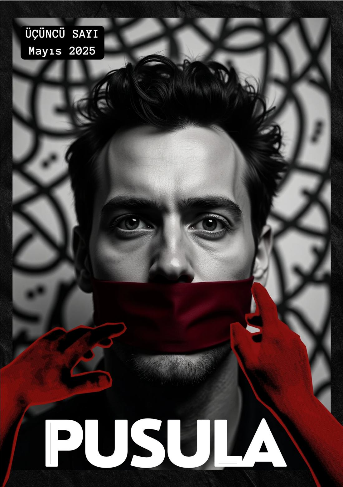
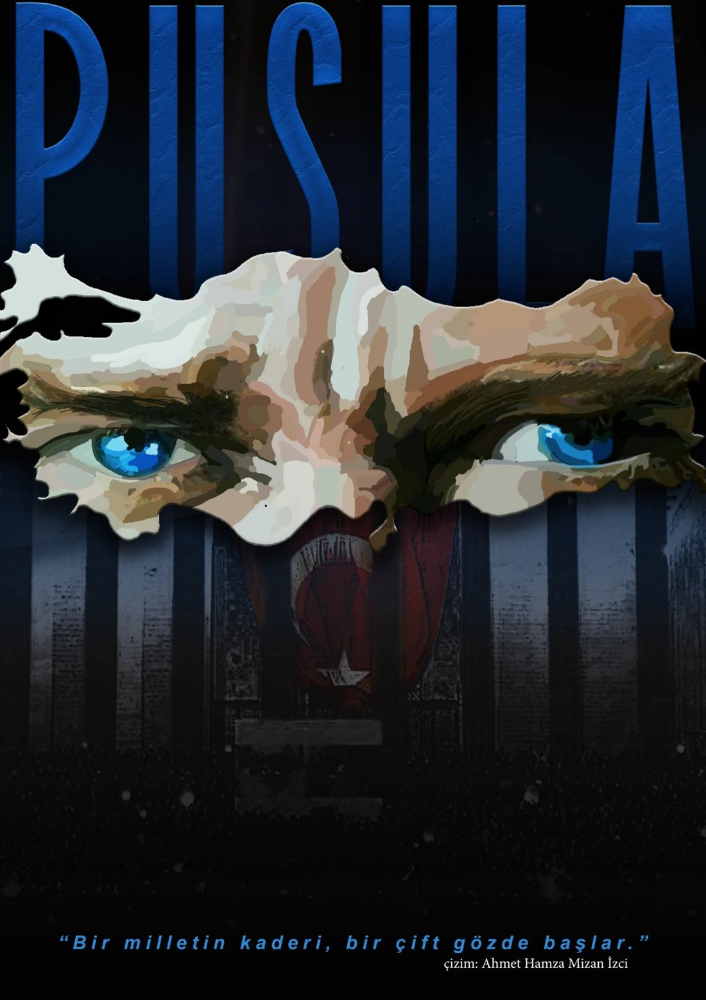
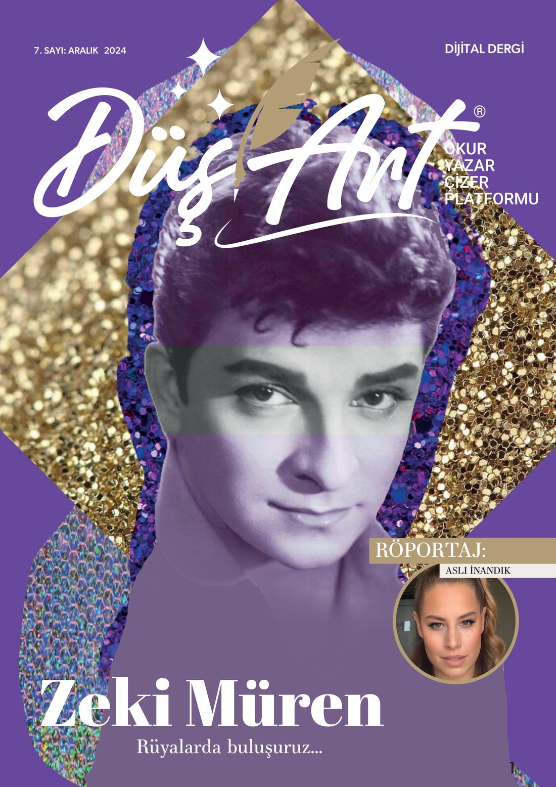

Ana Sayfa / Çalışmalar
Arşiv — Sayfa 07Portföy
Katkıda Bulunduğum Dergiler
Katkıda bulunduğum dergi sayılarından bir seçki.
DergilerI
Katkıda bulunduğum sayılar. Bir kapağa dokunun, sayının tamamını sitenin içinde, sayfa sayfa okuyun.

Pusula — İkinci Sayı

Pusula — Üçüncü Sayı

Pusula — Dördüncü Sayı

Maypa — 1. Sayı

DüşArt — 7. Sayı

DüşArt — 9. Sayı
Burada yer almasını istediğiniz bir dergi ya da proje mi var? Yazın, birlikte ekleyelim.
Benimle Çalışın